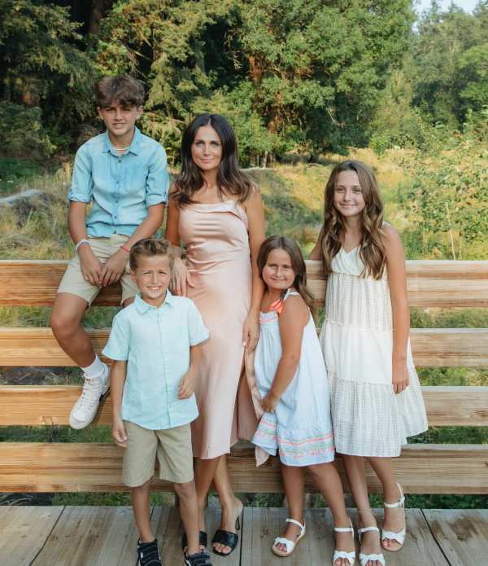

Providing exceptional care for your loved ones.
Skyline Adult Care is a home your loved ones can call their own. We provide nutritious home-cooked meals, activities, socialization, and individual care. Each room is private with a bath. Our home features a large deck with a spectacular view of the mountains. It is bright and decorated in warm colors. Welcome Home!

Testimonial
Dear Adriana,
Thank you very much for the excellent care your facility provided for our mother, Natalie MacKellar, until her passing this past May.
We had heard good things about Skyline Adult Care from the families of other residents. But the exceptionally high standard of service you and your staff provided exceeded our expectations. Our mother enjoyed the freshly prepared and nutritious meals. The cleanliness of your facility is remarkable (another thing she commented on). We also appreciated the comfortable, secure, and friendly environment, which made visiting her a real pleasure. The beautiful view was certainly a bonus as well.
The professional skill you displayed in coordinating Natalie’s medical needs was extremely helpful, from working with home health providers to monitoring her complex medication requirements. We also appreciated the time you took to communicate with us. We certainly give Skyline our highest recommendations. Please feel free to refer anyone interested in your facility to me, my sister, or my brother-in-law.
Sincerely,
John MacKellar

About the owner: Adriana Luca
I have been working in adult care for over thirteen years. I love working with the elderly, and I have known I would work in this field ever since I took care of my grandmother. I understand how hard it is when a loved one goes through changes in their life and needs more care. When I graduated from University of Portland with my bachelor’s degree in Organizational Communication/Marketing, I realized that I could apply much of what I learned to my adult care home. I am excited to be a part of your loved one’s life.

Provisions
- 24 hour care
- Private Room w/bath
- 3 cooked meals & snacks
- Intercoms
- Cable
- Phone
- Beautician services
- Close contact w/ Doctors
- Activities
- Housekeeping

Contact us
Address:
Skyline Adult Care
5795 Skyline Dr.
West Linn, OR 97068
| Phone: | (503) 740-7835 |
| Fax: | (503) 534-3086 |
| E-mail: | adrianapeia@gmail.com |